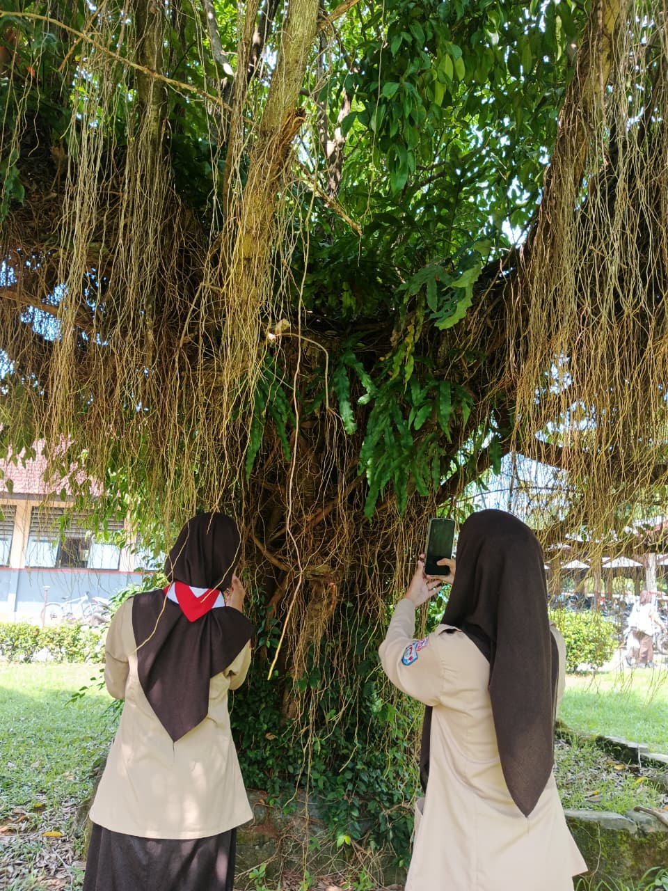

Pohon beringin adalah pohon besar yang termasuk tumbuhan tropis dan memiliki akar gantung yang khas. Pohon ini sering dijadikan peneduh karena ukurannya besar dan rindang. Nama ilmiahnya Ficus benjamina.
1. Batang besar, kuat, dan berkayu. 2. Memiliki akar gantung yang menjulur dari cabang. 3. Daun berwarna hijau dan berbentuk oval. 4 Tajuk pohon lebar dan sangat rindang. 5. Umurnya panjang.
Pohon beringin tumbuh baik di: •Daerah tropis. •Tanah subur dan lembab. •Area terbuka seperti taman, lapangan, dan pinggir jalan.
Pohon beringin adalah pohon besar yang rindang dan bermanfaat sebagai peneduh, penyerap udara kotor, serta menjaga lingkungan.
⬅ Kembali ke Home